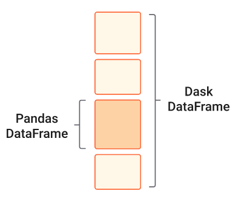
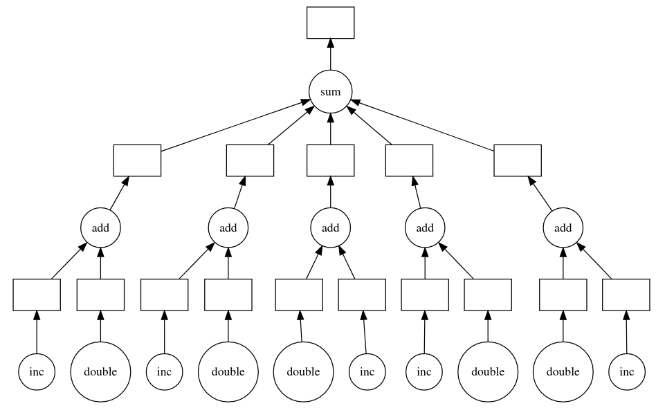
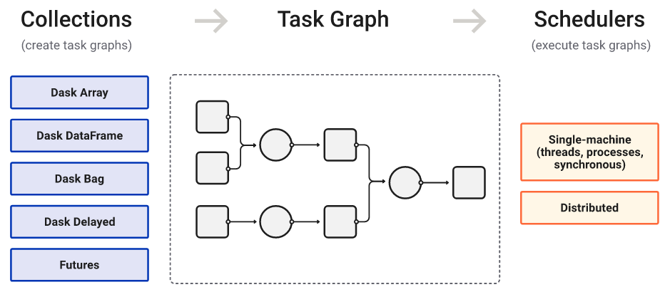
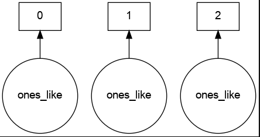
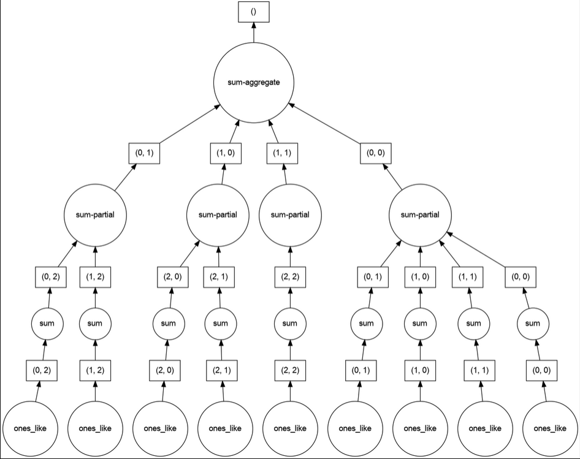
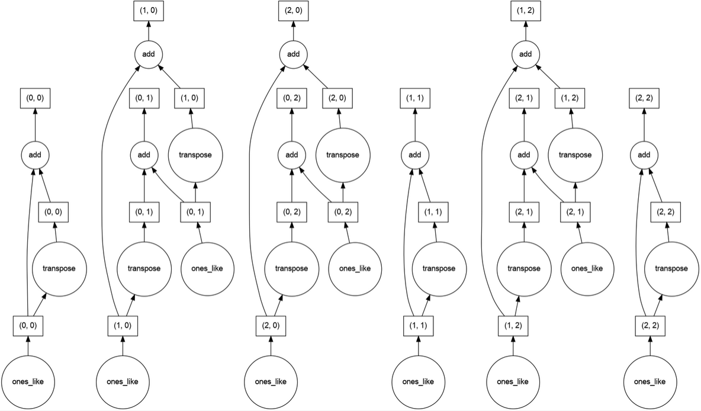
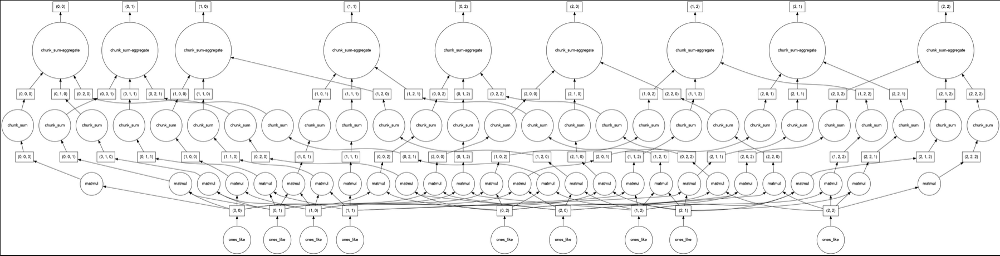
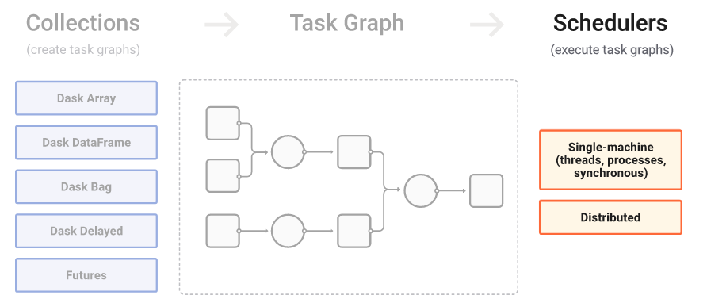
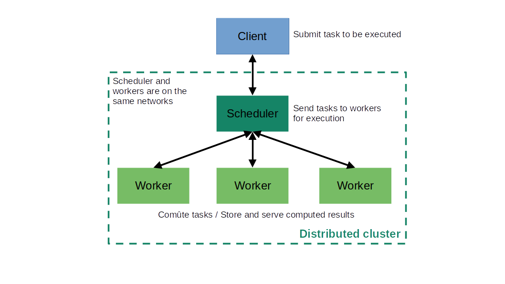
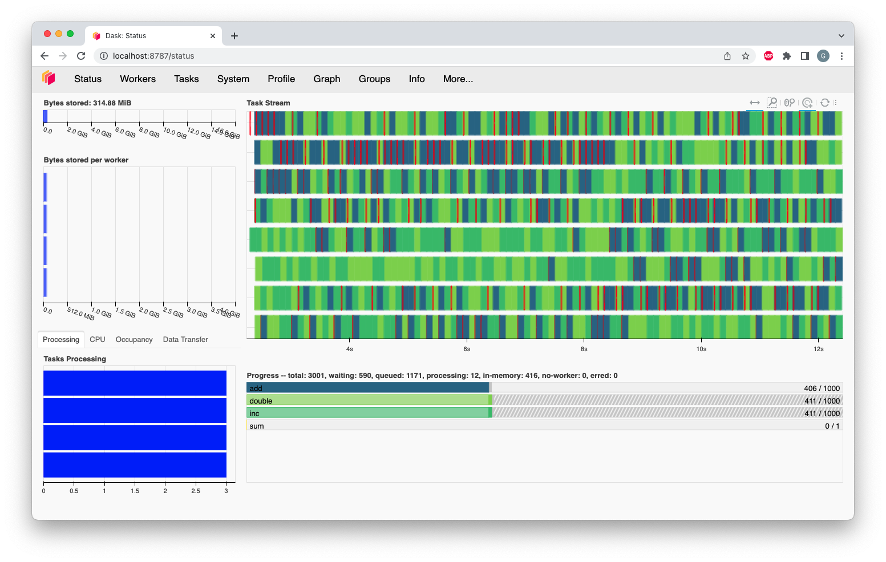

Dask presentation and tutorials
Guillaume Eynard-Bontemps and Emmanuelle Sarrazin, CNES (Centre National d’Etudes Spatiales - French Space Agency)
2024-01
Dask
What Dask is for ?
- Problem: Python is powerful and user friendly but it doesn’t scale well
- Solution: Dask enables to scale Python natively
What is Dask ?

Python library for parallel and distributed computing
- Scales Numpy, Pandas and Scikit-Learn
- General purpose computing/parallelization framework
Why use Dask ?
- Allow to process data than is larger than available memory for a single machine
- Parallel execution for faster processing
- Distribute computation for large datasets
How to use Dask ?
Dask provides several APIs
- Dataframes
- Arrays
- Bags
- Delayed
- Futures
Dataframes
- Extends Pandas library
- Enables to parallelize Pandas Dataframes operations
- Similar to Apache Spark

Arrays
Bags
- Allow to process in parallel Python lists, commonly used to process text or raw Python objects
- Offer map and reduce functionalities
- Similar to Spark RDDs or vanilla Python data structures and iterators
Delayed
- Allow to construct custom pipelines and workflows
- Enables to parallelize arbitrary for-loop style Python code
- Parallelize and distribute tasks
- Lazy task scheduling
- Similar to Airflow

from dask.distributed import LocalCluster
client = LocalCluster().get_client()
# Submit work to happen in parallel
results = []
for filename in filenames:
data = client.submit(load, filename)
result = client.submit(process, data)
results.append(result)
# Gather results back to local computer
results = client.gather(results)Futures
- Extends Python’s concurrent.futures interface for real-time
- Allow to scale generic Python workflows across a Dask cluster with minimal code changes
- Immediate task scheduling
Two levels of API
High-level
- Parallel version of popular library
- Scale Numpy, Pandas
- Similar to Spark
Low-level
- Distributed real-time scheduling
- Scale custom workflows
- Similar to Airflow
How Dask works ?
First, produce a task graph

High level collections are used to generate task graphs
First, produce a task graph
Create an array of ones

First, produce a task graph
First, produce a task graph
Create an 2d-array of ones and sum it

First, produce a task graph
Add array to its transpose

First, produce a task graph
Matrix multiplication
import dask.array as da
x = da.ones((15,15), chunks=(5,5))
y = da.ones((15,15), chunks=(5,5))
r = da.matmul(x,y)
Dask graph
Dask graph
- Every operations/tasks submit to Dask are turned to a graph
- Dask is lazily evaluated
- The real computation is performed by executing the graph
Then, compute the calculation
Use compute() to execute the graph and get the
result

Then, compute the calculation
Compute() method
- The method allows to compute the result of a Dask collection or a Future object
- The method blocks until the computation is complete and returns the result.
Persist() method
- The method allows to persist the computation of a Dask collection or a Future object in the worker’s memory.
- This can be useful for large datasets that are used multiple times in a computation, as it avoids recomputing the same data multiple times.
How to deploy ?
Dask execution
- Task graphs can be executed by schedulers on a single machine or a cluster
- Dask offers several backend execution systems, resilience to failures

Dask execution

Dask execution
- Client: interacts with the Dask cluster, submits task
- Scheduler: is in charge of executing the Dask graph, sends task to the workers
- Workers: compute tasks as directed by the scheduler, store and serve computed results to other workers or clients
Local execution
- Deploy Dask cluster on a single machine
- Configure to use threads or multiprocessing
Distributed execution
- Deploy Dask cluster on a distributed hardware
- Dask can work with:
- popular HPC job submission systems like SLURM, PBS, SGE, LSF, Torque, Condor
- Kubernetes
Use Dashboard
- Help to understand the state of your workers
- Follow worker memory consumption
- Follow CPU Utilization
- Follow data Transfer between workers

Quizz
What Dask does better than Spark (multiple choices)?
- Answer A: Dataframes manipulation
- Answer B: N-dimensionnal Arrays manipulation
- Answer C: Low level parallelization
- Answer D: Scaling to Petabytes dataset
- Answer E: Reliability
![Answer](data:image/png;base64,iVBORw0KGgoAAAANSUhEUgAAASwAAAEsCAIAAAD2HxkiAAAG9UlEQVR42u3d0ZKjKhQF0PZW/v+X%20+z6kqmsqUSQi5xzjWk9TM+2IxB0QWlh+f39/gDz/qQLI9dj9iWVZ/v6s2YTTLe/peqbu+Tdbf/7s%20HEcPXP0u+L4vglPqZ2rZVr+FG/90laur1R19qdCCLv0pLstSv4Yb+Xn69z5p/FMjw+w8E67W11/9%20+j6b+v1Ss2JfCvbSIdr6Jwk8/5nw2P3R6D2e/pDZ2S9qlPDvxnr/rnn5m63Cv99w7/fl6hfZpxX1%20UtRP63Dky7RxbKPeRLG3JWz0KAa7Mavfju0+zFldpmMl7Dyq0TfbajFWW7zdR6mtRuZAHb4U+EB3%20evWbYvebi97u6KRhhsZnc0oOD/TlGiX89Kitwg/2MHfPdawOP73k98tZbfC3vpKk6+Pu6LNNCOg8%20nHuK4N7O1pPze9WVfcwbOfZ5mavt+cs/rTbd8rb/TBjTgz/xw9jqCMUX/v1J77a33epDrwSGdkdX%20OyeNsYoTY/NRr6ynhJ2F/+gqen54XgdvpKgvk8a7Y0701vPuk9tgHt6HHAcHMxtN3+rw5kgJ+wu/%20NTraLn/7qPbo6IHP68C4tMn6iBCqnVvdKCJR/ZmQuz2woSUEvMoEQghCCAghCCEghCCEgBCCEAJC%20CEIICCEIISCEIISAEIIQAkIIXy5ojZmCGxI09lTIOntuzfcXKff/zL1DtISgOwoIIQghIIQghMBZ%20MpfBLzhMn1v4guXc2o8x5vBL3yFaQtAdBYQQhBAQQhBCoK3cTr2Dg8UzBrX737cY/MkZL3YMThIM%20/p8FJ3IK7oqrJQQhBCEEhBCEEBBCuKeHKvjXjNmIfrmD74OXOWMuREsICCEIISCEIISAEMIXM0Wx%20b3BhosGdG2YstTTj7OYttIQghIAQghACQghCCHyk3BRF7vj1jCH13NWfwpZaCvvgvm+GQ0sIQghC%20CAghCCEghHBPmVMUuXsUzyh82K4Vq8LO3v/Bhb0CoiUEhBCEEBBCEEJACOFygqYo7ry2T+4WETPO%20PviT7hAtIQghIIQghIAQghACPz8/S7Wh4Rkj3WH7XfcXaUaF5M5bFKzPq8yaaAlBdxSEEBBCEEJA%20COGegt6iCFvCKGz0PGyUP2zov7+cMz7igruCawlBdxQQQhBCQAhBCIGpyu1FEbY39YzD+y9z8CcL%20LotUsObD7jotIeiOAkIIQggIIQghcEDmXhRhv7qeO/EwY+y+v0gzBt9zZyO+b7dtLSEIIQghIIQg%20hIAQwj0tl9imuOB+DIOFD9ugot+Mqiv4yoK3KAAhBCEEhBCEEBBCKOJRrUC5g+9hh4dd++AV5W4m%20cZXDtYSgOwoIIQghIIQghMABmdtlDwqbOcitkNzLnLGtd//hgzdD2OFaQtAdBYQQhBAQQhBC4IBy%20Cz1delGmsMIPTvnMeLEjbC4kt0K0hKA7CgghCCEghCCEwFnsRZFz9kG5J5pRS2E3g5YQEEIQQkAI%20QQgBIYQiMhd6GpxOuMpQ9YwR+YKzJoPXPmNFqRl3nZYQdEcBIQQhBIQQhBA4y+O6RS/4JkG/wTHx%20sK0XcudCZpw9dzZCSwi6o4AQghACQghCCPzJnKLIXX8p9zJzK2SwlsLqM+zavUUBuqOAEIIQAkII%20QgjEC5qiuPQmDWFLA+UO/c9YFqngCyhhi1xpCUF3FBBCEEJACEEIgbbMvSgGzfit/0vvyx32weVO%20OM2YNcmdt9ASgu4oCCEghCCEgBDCPWUu9GSU/3CFDNZn7oxR7gso9qIAhBCEEBBCEEJACKGIa2yX%20nbuyUH+RVhXc2rr/RIMbaYRV8oz61BKC7igghCCEgBCCEAJTLTEjtjPWCwr7xfncxY4Gr/0qn2ZY%20hRR8z0ZLCLqjIISAEIIQAkII97QU/KXyzOqYsApQ2PTMTTbSyK0lLSHojgJCCEIICCEIIXCWC2+X%20PWhwnaiwDRVmbCYRNhsRVqSw1bS0hKA7CgghCCEghCCEwFnKbZc9Q9iA/uDODWEVEjaVElak3DdI%20tISgOwoIIQghIIQghMAB5bbLLjjSHbaq0uDZc3fXCHsFZPBzL/hCj5YQhBCEEBBCEEJACOGeHqrg%20mIKbdedee+78ymDV5c5baAlBdxSEEBBCEEJACOGeTFHsm7HBcth2DoPlzC18/34huVtZaAlBdxQQ%20QhBCQAhBCIEDyk1RXOX9gFUzVqkaXCtpxvJNua6y4YeWEHRHASEEIQSEEIQQaMucoii4K0C/gltE%20hC1hlLuZxODhBecttISgOwpCCAghCCEghHBPS8FfKgctISCEIISAEIIQAkIIQggIIQghIIQghIAQ%20ghACQghCCAghCCEghCCEgBCCEAJCCEIICCEIISCEIISAEIIQAkIIQggIIQghIIRwGf8DRf3ThK9d%20jUAAAAAASUVORK5CYII=)
Answer link Key: tw
Dask and machine learning
Scikit-learn/Joblib
Scikit-learn/Joblib/Dask
Dask-ML
- Provides scalable machine learning alongside popular machine learning libraries
- Work with
- Scikit-Learn,
- XGBoost
- PyTorch
- Tensorflow/Keras
How to install ?
via pip
Extras package
- Use Dask on queuing systems like PBS, Slurm, MOAB, SGE, LSF, and HTCondor.
- Use Dask on Kubernetes
- Use Dask with machine learning framework
Try Dask
Dask Tutorial
Try to follow by order of importance:
- Dask Dataframes
- Distributed
- Delayed
- Parallel and Distributed Machine Learning
- Next, if you have more time
- Array
- Futures
Pangeo tutorial or finish deploying your computing platform
or
Finish yesterday deployment (needed for tomorrow).